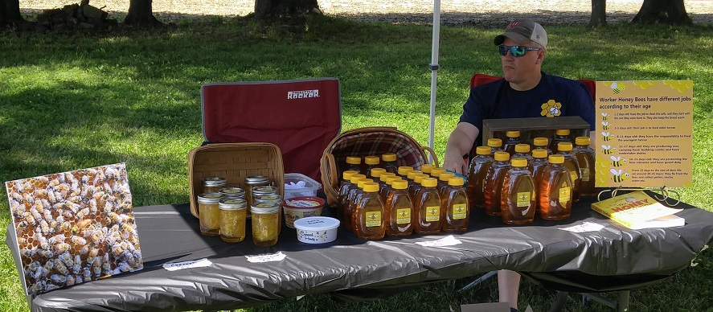
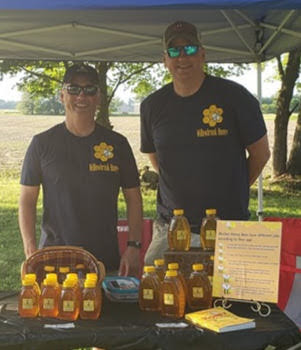

Willowbrook Honey
is a local family beekeeping business in Terre Haute, Indiana owned and operated by brothers Eric and Mark Ellis.
They have been selling honey for 7 years and appeared at the 2019 Berry Bash as pictured below.
If you are interested in ordering or contacting, please visit the Order page.
